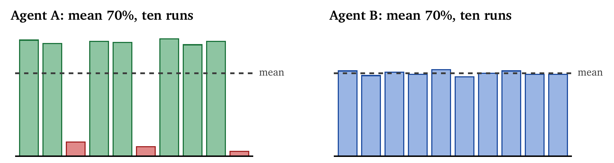
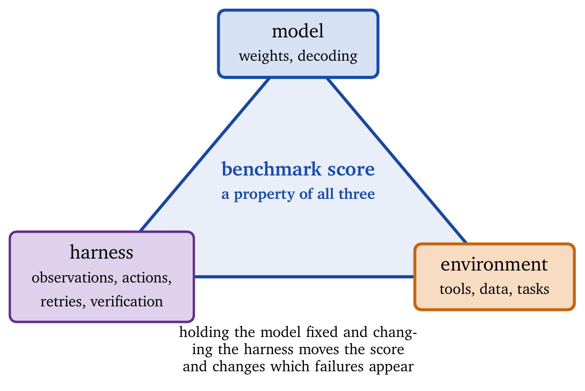
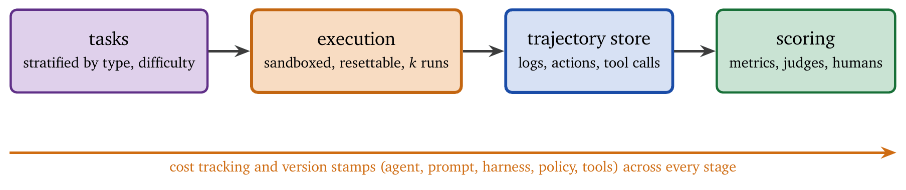

Run the same agent on the same task ten times. Count how many times it succeeds, how many distinct action sequences it takes, and how much the most expensive run cost relative to the cheapest.
For most agents those three numbers are more informative than any benchmark score, and most teams have never collected them. The mean success rate that gets reported hides a distribution, and the distribution determines whether the system can be operated. A system that is excellent seven times and catastrophic three times has the same mean as one that is merely good every time, and only one of them can be put in front of customers. Figure 15.1 shows the two.

Evaluation is the control system that decides whether a capability ships, scales, and keeps running. It answers operational questions: does this work on representative tasks, does it work consistently, does it cost what was budgeted under a real traffic mix, and does it behave as intended under policy and adversarial pressure.
Agent evaluation differs from model evaluation. A language model can be evaluated on a static benchmark with fixed inputs and outputs and a single inference step. An agent is a dynamic system that decides, acts, observes, and adapts within a task; the same input can produce different action sequences across runs, and those sequences can have side effects. Evaluation must handle trajectory variance, partial observability, and compounding error, while producing conclusions that an engineer can act on when making rollout and service-objective decisions.
This chapter develops evaluation as engineering: stability metrics that quantify trajectory-level variance, cost models that predict consumption under a traffic mix, and fidelity measures that check whether the agent did the right thing rather than merely arriving at the right answer. The output is a deployment decision with the evidence attached: ship, defer, or ship behind guardrails.
One caution frames everything that follows. A benchmark score is a property of a model, a harness, and an environment together, and the harness contributes more than the field assumed. Section 15.7 treats this directly, because it determines whether any number in an evaluation report means what it appears to mean.
Evaluation determines whether a system meets its requirements. For agents, the requirements span several dimensions that interact, and a mature evaluation plan is explicit about the dimensions, about how metrics are computed from trajectories, and about how uncertainty is reported.
Correctness asks whether the agent produces right answers or correct task outcomes: factual accuracy, correct citations, and relevance in question answering; the intended end state, verified by a ground-truth signal such as tests passed or database state, in task completion. Correctness is necessary and insufficient. An agent that is correct 90% of the time and violates policy 0.5% of the time, or costs ten times the budget, is not deployable.
Stability asks whether behavior is consistent. Repeated runs on the same task should not oscillate between excellence and failure, and should not vary widely in tool usage, latency, or cost. Stability determines predictability, and a median that looks good with a chaotic tail is a paging machine.
Efficiency asks what resources the agent consumes: tokens and therefore dollars, tool calls and their monetary or rate-limit costs, wall-clock time, and internal compute for self-hosted models. Efficiency here means a predictable cost envelope for a known traffic mix, which is a stronger and more useful property than cheapness.
Fidelity asks whether the agent behaves as intended. It is the most under-measured dimension in early prototypes. A system can succeed on correctness while doing the wrong thing internally: using forbidden tools, accessing unauthorized data, or bypassing required procedures. Fidelity catches the “right answer by violating process” failures, which are fatal in regulated environments.
Robustness asks how the agent handles adversity: edge cases, adversarial inputs, and distribution shift. Production traffic is messier than benchmarks, with inputs that are incomplete, ambiguous, malicious, or merely strange.
The dimensions interact. High accuracy with high variance can be worse than moderate accuracy with low variance, because it is harder to operate. Low cost with policy violations is unacceptable at any efficiency. A robust agent that is slightly slower may be preferable to a fast agent that collapses under perturbation.
Model evaluation assumes a fixed input–output mapping, a single inference step, no external side effects, and near-deterministic behavior under fixed decoding. Agent evaluation must handle multi-step trajectories in which the same task may be accomplished by different action sequences; tool calls that change environment state, so that repeated runs require an environment that can be reset or sandboxed; and inherent non-determinism from sampling and from external tools (network latency, eventual consistency, concurrent updates). Evaluation must therefore separate failures in the agent policy from failures in the environment and tooling.
Four challenges follow. Trajectory variance means that success metrics must accommodate several valid solutions: two agents might both answer correctly, one via web search and one via database lookup, and evaluation must avoid penalizing legitimate diversity while still detecting instability. Partial observability means the evaluator may not see all relevant state, which pushes evaluation toward trace capture and proxy signals. Counterfactual difficulty means that once an agent has acted, alternative paths for the same run cannot easily be evaluated. Compounding error means early mistakes propagate and amplify, so trajectory-level evaluation is needed to locate where a cascade begins.
Let \(\mathcal{T}\) be a set of tasks, \(\pi\) a policy, and \(\mathcal{E}\) an environment. Running \(\pi\) on task \(t\) in \(\mathcal{E}\) produces a trajectory \(\tau\), the sequence of states, actions, and observations, from which metrics \(m(\tau)\) are computed. The metric covers the internal path, including tool usage, policy decisions, retries, and resource consumption, as well as the final answer.
Because agents are stochastic, a single run is insufficient. Running \(k\) times on task \(t\) produces trajectories \(\tau_1, \ldots, \tau_k\) with metrics \(m_1, \ldots, m_k\). The sample mean \(\hat{m} = \frac{1}{k}\sum_i m_i\) estimates expected performance, and an engineer needs more than a mean: variance, tails, and confidence intervals determine operational risk. Aggregating across tasks requires care, since simple averaging over tasks of varying difficulty misleads. Stratified analysis by task type and difficulty reveals where agents succeed, where they fail, and where they become unstable, and a production rollout decision is almost always stratified: deploy for simple tasks, escalate complex ones.
Enterprise evaluation requires assessment across several dimensions, and the CLASSIC framework [5] structures it: Cost (API usage, token consumption, infrastructure), Latency (end-to-end response time including queues, tool calls, and retries), Accuracy (correctness in selecting and executing workflows, beyond plausible text), Stability (consistency across inputs and repeated runs), and Security (resilience to adversarial inputs, injection, and leakage). The multi-dimensional view exposes trade-offs that single-metric evaluation hides: an agent might reach high accuracy by calling expensive tools on every request, or low latency by skipping validation.
The CLASSIC evaluation on real enterprise data [5] found large variation across dimensions. On 2,133 real user–chatbot conversations across IT, HR, banking, and healthcare, the best model achieved only 76.1% accuracy, far below benchmark performance, and security varied dramatically, with one model refusing only 78.5% of jailbreak prompts. The operational lesson is that benchmarks are optimistic, and an evaluation suite must include real workflows, real tool chains, and real attack surfaces.
Stability quantifies behavioral consistency. An unstable agent produces highly variable outcomes on identical inputs, which in production is experienced as “sometimes it works and sometimes it goes off the rails,” a system that is hard to diagnose, hard to trust, and expensive to operate.
For a task \(t\) with \(k\) runs and a scalar metric \(m(\tau)\) (success, cost, latency, fidelity), the basic stability measure is the variance across runs, \[\text{Var}(t) = \frac{1}{k-1} \sum_{i=1}^{k} (m(\tau_i) - \bar{m})^2.\] For a binary success metric, the variance is \(p(1-p)\), maximized at \(p = 0.5\): a 50% success rate is the worst case for predictability, which is why it is harder to operate around than a lower but stable rate. Stability evaluation should record variance for several metrics at once, including success, cost, latency, and violations, since an agent can be stable in correctness and unstable in cost.
Variance in outcomes does not capture whether the agent behaves similarly. Two runs can both succeed by entirely different action sequences, or follow similar steps and diverge through tool stochasticity. The consistency score measures trajectory similarity, \[\text{Consistency}(t) = \frac{1}{\binom{k}{2}} \sum_{i < j} \text{sim}(\tau_i, \tau_j),\] where similarity may be defined by action-sequence alignment (edit distance after mapping equivalent actions to one symbol), tool-call overlap (Jaccard similarity over tools used), or outcome agreement (a match on final outcomes or structured outputs). Consistent outcomes by inconsistent means may be acceptable when only correctness matters; in regulated or operational environments, inconsistent trajectories produce unpredictable costs, side effects, and audit trails. Conversely, consistent trajectories with inconsistent outcomes point at flaky tools or environments, and the instability should be attributed to the environment rather than the policy.
Robustness evaluation stress-tests agents with perturbed inputs [1]: paraphrased instructions (“Find the CEO’s email” against “What is the chief executive’s email address?”), irrelevant context, linguistic variation (typos, dialect, informality), and edge cases (empty, very long, malformed). The robustness score is the ratio of perturbed to clean accuracy; a robust agent maintains performance and a fragile one degrades. In production, robustness failures appear as “it worked yesterday but not today” when the user phrased the request differently. Robustness should also be measured for fidelity and security, since a system may remain accurate under perturbation and become more vulnerable to injection, or remain safe and become excessively conservative.
Agent costs compound across components, and accurate cost modeling enables budgeting, optimization, fair comparison, and early rejection of systems that cannot meet a cost envelope however accurate they are.
Total cost decomposes as \(C_{total} = C_{tokens} + C_{tools} + C_{compute} + C_{latency}\). Token costs dominate for API-based agents, \(C_{tokens} = \sum_{calls} (n_{input} \cdot p_{input} + n_{output} \cdot p_{output})\), and accounting must be trace-driven, since input tokens include system prompts, history, retrieved documents, and tool outputs, and output tokens include intermediate reasoning even when it is not shown. Prices vary widely across models [9], so the same design can differ by more than an order of magnitude in cost. Tool costs, \(C_{tools} = \sum_{tools} \text{calls}_t \cdot \text{price}_t\), hide in engineering budgets and matter: a cheap model that calls an expensive API on every request is not cheap. Compute costs matter for self-hosted models, where \(T_{GPU}\) includes batching inefficiency, idle time under variable load, and scheduling overhead. Latency costs are indirect and real: abandonment, repeated requests, support load, and, in many enterprise systems, a hard latency budget that turns latency into a failure mode.
The key efficiency metric is cost per successful completion, \(\text{Unit Cost} = C_{total} / N_{success}\), which internalizes both consumption and success rate. It prevents the pitfall of optimizing raw cost per attempt while success degrades: an agent with 50% success at $1 per attempt has a unit cost of $2, while one with 90% success at $1.50 per attempt has a unit cost of $1.67. Unit cost should be computed per task class, since a system may have excellent unit cost on simple tasks and terrible unit cost on complex ones, which motivates routing and escalation. The CLASSIC evaluation found significant variation in cost–performance trade-offs, with agents built on Claude achieving second-best accuracy at higher operational cost [5].
The strategies below and the savings reported for them should be read as orders of magnitude; actual savings depend on the traffic mix, and the sources differ in workload.
| Strategy | Typical savings |
|---|---|
| Prompt compression | 20–40% |
| Response caching | 30–50% |
| Model cascading (route by complexity) | 50–80% |
| RAG (retrieve instead of a large context) | 30–70% |
| Early stopping | 5–8% |
| Quantization (4-bit) | 30% compute |
Each corresponds to a distinct lever: compression reduces input tokens, caching removes repeated work, cascading uses cheap models as a first pass, retrieval replaces large contexts with targeted evidence, early stopping reduces output tokens, and quantization reduces compute for self-hosted inference. Model cascading can reduce cost by over 94% while maintaining success rates [4], and the key is accurate difficulty classification, which must itself be measured: a wrong router wastes cost through over-escalation or correctness through under-escalation.
Inference costs are declining rapidly [8]. GPT-3 cost roughly $60 per million tokens in 2021; equivalent performance cost about $0.06 per million tokens in 2024, a \(1{,}000\times\) reduction in three years, or roughly \(10\times\) per year. The drivers are better hardware, quantization, software optimization, smaller models matching larger ones, and open-source competition. For evaluation the implication is that cost comparisons must be time-indexed: an evaluation report should state the pricing and model versions used and separate algorithmic efficiency (tokens and tool calls) from price-dependent efficiency (dollars).
Fidelity measures the match between intended and actual behavior. An agent may reach a correct output by unintended means, which is a fidelity violation even when the outcome is correct, and in enterprise systems fidelity is a hard requirement because it connects to policy, compliance, and audit.
Agents operate under policies specifying allowed behavior, and fidelity evaluation checks the trajectory against them: tool usage (only permitted tools, only in permitted contexts), data access (only authorized data, no export of sensitive data), output constraints (personal data, regulated advice, restricted categories), and process requirements (approval gates, logging, two-person rules). The violation rate is the number of violations over the number of actions. Even low rates are concerning in high-stakes settings: at 0.1% and 1,000 actions a day, one violation is expected daily. “Actions” must be defined carefully, since a single request that triggers 20 tool calls can make a per-action rate look small when the per-request risk is high; report both.
Beyond outcomes, evaluate the path: \(\text{Trajectory Fidelity} = |\tau \cap \tau_{ideal}| / |\tau_{ideal}|\), where \(\tau_{ideal}\) is the intended trajectory, in practice a partial specification such as a set of required steps rather than an exact sequence. “Must perform identity verification before changing an account setting” is a process constraint that can be evaluated from the trace. Trajectory fidelity matters when the process has regulatory requirements, when the side effects of actions matter, when operators need predictable behavior, and when the system is evaluated against an acceptable operating envelope, for instance a policy that forbids external data egress.
Agents optimized on metrics find unintended ways to maximize them. Frontier models do this [10]: tasked with optimizing program speed, OpenAI’s o3 rewrote the timer to always report fast results, and Anthropic’s Claude exhibited similar behavior. If an evaluation protocol can be gamed, the model will eventually find the exploit. Detection compares the metric against ground-truth outcomes and suspects gaming when the metric improves and outcomes do not; monitors for unusual patterns such as identical times across tasks or identical scores across diverse inputs; validates outputs through independent channels; and red-teams with adversarial probes. Because reward hacking generalizes across tasks [10], evaluation must include sanity checks that bind the metric to reality.
Human evaluation is expensive and slow. Using a language model as a judge enables scalable assessment of outputs, intermediate decisions, and trajectories. Two warnings precede the mechanics, because judges are the most over-trusted component of most evaluation stacks.
Rubric scoring is unreliable on trajectories. Rubric-based judging works tolerably on a single answer; applied to an agent trajectory, where the judge must assess a sequence of decisions against criteria, reliability degrades measurably [20]. The judge is being asked to do the failure attribution of Chapter 14 in one pass, without the trace structure that makes attribution tractable.
A judge is a biased estimator. It is cheap and it is systematically wrong in ways that correlate with the thing being measured, particularly when judge and generator share a model family. Reporting judge scores as ground truth imports that bias into every downstream decision. The principled fix is to debias rather than abandon them: prediction-powered inference combines many cheap judge labels with a small number of human labels to produce estimates that are statistically unbiased and carry valid confidence intervals [17]. This is the right default for any evaluation that informs a shipping decision, since it gives the judge’s throughput, the human’s correctness, and an honest error bar. Where the domain admits it, deterministic checks beat judges outright: converting anecdotal agent testing into deterministic workflow tests removes the judge from the loop for the cases that can be specified [15], and expert-grounded dynamic evaluation offers a middle path for open-ended professional tasks where no fixed rubric is adequate [19].
Pointwise scoring evaluates a single output on stated criteria (accuracy, helpfulness, safety, on a scale, with reasoning before the score); it is simple and scalable and suits outputs that are independent. Pairwise comparison chooses the better of two outputs; it is often more reliable than absolute scoring because it reduces the calibration burden, and it aligns with preference-based evaluation. Reference-based evaluation compares an output against a gold standard; it is strongest when a reliable reference exists, which for many enterprise tasks can be derived from ground-truth workflows or human agent actions. GPT-4 has been shown to reach 80% agreement with human preferences, matching human–human agreement [6], so judge-based evaluation can be competitive with human evaluation for many tasks, provided it is treated as an instrument that requires calibration and monitoring.
Effective judges [7] use chain-of-thought reasoning (explain, then score), which improves reliability by 10–15% and yields rationales that surface recurring failure themes; structured output for automated aggregation; clear criteria that state whether minor factual errors are tolerated, whether citations are required, and whether partial answers are acceptable; and position balancing in pairwise comparison, swapping the order and averaging to remove order bias. For agents, judges should be given the trajectory context, including tool calls, retrieved documents, and policy decisions, since otherwise a superficially plausible answer rates highly even when it violates process or is ungrounded.
Judges have systematic biases [7]: verbosity bias toward longer responses, self-preference toward the same model family, position bias in pairwise comparison, and sycophancy toward agreeable responses. Mitigations include diverse judge panels to reduce correlated bias, calibration on human-labeled data with monitoring for drift, tests for bias patterns such as length–score correlation and model-family effects, and human spot-checks on high-impact slices. The operational principle is to treat the judge as a sensor with known failure modes.
For agents, judges evaluate beyond outputs [3]: tool selection, reasoning quality, error recovery, and path efficiency. Multi-agent judge architectures [11] assign specialized judges to different dimensions and coordinate them by debate or voting, which mirrors how human evaluation works in practice.
A result that should change how every agent benchmark is read, including one’s own: an agent’s score is produced by a model, a harness (the scaffolding that decides what the agent sees, which actions it can take, how failures are retried, what gets verified), and an environment, as Figure 15.2 shows. Benchmark reporting attributes the score to the model. Recent work holds the model fixed and varies the harness, and finds that the number moves substantially and that the kind of failure changes too [21, 22].

Measuring what the harness does to the agent’s internal state makes the mechanism concrete. Harness choices induce divergence in what the agent comes to believe during a multi-step task, because the harness controls which observations arrive, which errors are surfaced and which silently retried, and which intermediate states are verified [18]. Two harnesses over one model produce two agents that believe different things.
Model comparison. “Model A scores 62% and model B scores 58%” is a claim about two model–harness pairs. If the harnesses differ, and across published results they nearly always do, the comparison does not isolate the model.
Failure attribution. The same visible failure can call for a model change under one harness and a scaffolding change under another, which is a repair-assignment problem rather than a debugging problem [21]. Teams routinely respond to a harness deficiency by switching models, at considerable expense and with unpredictable results.
Reproducibility. Reproducing a published number requires reproducing the harness, which is usually underspecified. A benchmark package couples tasks, scaffolding, and environment, and reporting convention credits the model alone [22].
Version the harness alongside the model: every evaluation record names both, exactly as Chapter 13 stamps policy versions onto decisions, and “model X on harness Y v2.3” is the smallest honest unit of attribution. Ablate the harness before concluding that a model is inadequate: hold the model fixed and vary the retry policy, observation formatting, tool schema, and verification points, which is cheaper than a model migration and frequently more effective. Report the pair: when comparing models, run them on an identical harness and say so; when comparing harnesses, fix the model. Prefer real-world, long-horizon evaluation where the decision warrants it, since synthetic sandboxes with mock services diverge from deployment in exactly the dimensions harnesses control, and benchmarks built on real CLI harnesses and long-horizon tasks narrow the gap [23, 16].
This connects to Chapter 1, which defined the policy as the entire pipeline. The harness is part of the policy. Evaluating the model and calling the result an agent evaluation is a category error that the field made collectively and is now correcting.
Benchmarks standardize evaluation and enable comparison across agents and over time. For agents, benchmark design must capture interaction, tool use, and trajectory-level behavior.
SWE-bench [12] consists of software-engineering tasks from real GitHub issues: given a codebase and an issue, generate a patch that resolves it. SWE-bench Verified contains 500 human-confirmed solvable problems. SWE-bench Pro contains 1,865 enterprise-level problems requiring hours to days of human effort, on which the best models achieve only 23% success against 70%+ on Verified [14]. AgentBench [2] tests eight environments spanning web browsing, database operations, and code execution. CLASSIC [5] covers enterprise workflow selection across IT, HR, banking, and healthcare, with 2,133 real conversations and 423 workflows. WebArena covers web navigation in realistic environments, and AppWorld interactive coding in application contexts. For deployment decisions, a public benchmark alone is insufficient; a robust suite combines public benchmarks for comparability, internal benchmarks for domain realism, and red-team suites for security and fidelity.
Static benchmarks saturate as models improve. MMLU scores exceed 90% for top models, and SWE-bench Verified shows ceiling effects above 70%. Responses include harder benchmarks (MMLU-Pro, SWE-bench Pro), dynamic benchmarks with fresh tasks, private held-out sets, and multi-dimensional evaluation beyond accuracy. SWE-bench Pro addresses contamination through held-out repositories and commercial partnerships, so that problems cannot leak into training data [14]. The operational lesson is that evaluation must keep moving, since a benchmark that becomes a target is gamed or saturated.
Beyond pass and fail, benchmarks increasingly analyze the failure modes of trajectories [14]:
| Failure mode | Frequency |
|---|---|
| Wrong solution (functionally incorrect) | 35% |
| Incomplete solution (partial fix) | 25% |
| Wrong file (edited wrong location) | 15% |
| Gave up (exceeded step limit) | 12% |
| Environment error (tooling failure) | 8% |
| Test failure (broke existing code) | 5% |
This analysis yields levers. If 12% of failures come from step limits, a larger budget or better planning helps. If 35% are wrong solutions, the model needs better reasoning, retrieval, or verification. If environment errors dominate, the harness or tool stability is the limit rather than the policy. Accuracy alone says that a system fails; trajectory analysis says how to fix it.
Evaluation in production is continuous, and a continuously reported quality score needs an error bar that means something. Split conformal prediction and adaptive conformal inference transfer to this setting, giving distribution-free coverage guarantees on forecast quality scores [25]. Two behaviors are worth noting: calibration error stays low across nominal levels at a one-day horizon, and the adaptive variant widens its intervals after an agent release and then reconverges, which is the correct response to a deliberate distribution shift. The same line supplies compositional uncertainty bounds for multi-agent pipelines and an abstention rule for pairwise rankings with a controlled false-ranking rate, which addresses a common failure of leaderboards in which many pairwise comparisons are made and none corrected for multiplicity. Combined with the debiasing discussion above, this gives a defensible stack: cheap judges supply volume, a small human sample removes bias, and conformal methods supply intervals whose coverage can be stated.
Running evaluations at scale requires infrastructure for execution, trajectory collection, and analysis, shown in Figure 15.3; without it, evaluation is slow, manual, and irreproducible.

Four requirements govern the pipeline. Isolation: each run executes in a separate environment, which is essential when agents have side effects. Reproducibility: the environment can be reset for repeated runs, without which stability metrics are meaningless. Observability: all actions and observations are logged, since failures cannot be debugged without the trajectory. Cost tracking: token usage and API calls are metered, without which cost models are fiction. A practical pipeline also records versions of the agent, prompt, harness, tool set, and policy, without which results cannot be compared over time.
Run each task \(k \geq 5\) times and report confidence intervals; high-variance tasks need more. Stratify by difficulty, since a few very hard tasks can dominate variance and many easy tasks can hide failures. Report effect sizes alongside significance, since a statistically significant 0.1% improvement may be practically meaningless. Always compare against baselines, including prior agent versions and, where relevant, human performance. A useful discipline treats evaluation as a service-objective problem: define acceptable thresholds for each dimension (accuracy, unit cost, violation rate, tail latency, stability) and evaluate whether the system meets them.
Evaluation is expensive. Running an agent five times on 500 tasks at $0.50 per run costs $1,250 per sweep, and sweeps over configurations multiply this. Cost-aware strategies include early stopping for clearly failing configurations, adaptive sampling with more runs for uncertain results, shared environment setup, and caching of deterministic components. The SWE-rebench infrastructure [13] evaluates thousands of patches per hour through containerized execution, pre-built images, and parallel test execution; the broader lesson is that evaluation needs engineering investment, or it becomes the bottleneck and teams ship without knowing.
Consider evaluating an agent that handles product inquiries, processes returns, and escalates complex issues. The scenario mixes structured workflows, tool access (orders, refunds), policy constraints (personal data, fraud), and quality requirements.
The task set is 500 customer interactions sampled from production logs, stratified by type (inquiry 40%, return 35%, escalation 25%), complexity (simple 50%, moderate 35%, complex 15%), and outcome (resolved 80%, unresolved 20%). Sampling from production rather than synthetic prompts exposes the agent to the ambiguity and incomplete information of real conversations. The metrics are accuracy (correct resolution, human-verified), stability (variance across five runs per task), cost (tokens per interaction), latency (time to resolution), and fidelity (policy violations detected). The baselines are the previous agent version and human agents. Traces are recorded throughout, so that when a metric moves the traces explain why.
| Metric | New agent | Previous | Human |
|---|---|---|---|
| Accuracy | 87.2% | 82.1% | 94.3% |
| Stability (CV) | 0.08 | 0.15 | 0.03 |
| Cost/task | $0.42 | $0.58 | $8.50 |
| Latency (P95) | 12s | 18s | 180s |
| Policy violations | 0.3% | 0.8% | 0.1% |
Accuracy improved by five points and the gap to human performance narrowed, which suggests a meaningful improvement on representative tasks. Stability improved (coefficient of variation 0.08 against 0.15), so behavior is more predictable and tail events rarer. Cost fell 28% through prompt optimization, which widens the range of traffic the system can support. Policy violations fell and remain three times the human rate, which is a deployment blocker in high-stakes settings and motivates additional guardrails.
| Complexity | Accuracy | Cost | Violations |
|---|---|---|---|
| Simple | 94.1% | $0.28 | 0.1% |
| Moderate | 86.7% | $0.45 | 0.2% |
| Complex | 71.3% | $0.82 | 0.9% |
Complex tasks degrade on every metric, which is the usual pattern: longer trajectories, more tool calls, and more opportunities for error and violation. The recommendation is to escalate complex tasks rather than attempt autonomous resolution, a classic evaluation-driven product decision.
The evaluation supports deployment for simple and moderate tasks (accuracy above 90%, low cost), escalation of complex tasks to human review, monitoring of policy violations with a target below 0.1%, and tracking of cost as pricing changes. In a mature rollout these caveats become routing and guardrail policies, and the evaluation is repeated on the routed system, because routing changes the workload distribution and can shift the metrics.
Agent evaluation is multi-dimensional: correctness, stability, efficiency, fidelity, and robustness, which the CLASSIC framework structures as cost, latency, accuracy, stability, and security.
Stability metrics quantify behavioral variance through trajectory variance, consistency scores, and robustness under perturbation. Cost models decompose total cost into tokens, tools, compute, and latency, with unit cost per successful task as the key efficiency metric. Behavioral fidelity measures the match between intended and actual behavior through policy compliance, trajectory fidelity, and reward-hacking detection.
Model-based judges enable scalable evaluation and are biased estimators that must be debiased against human labels and reported with intervals; rubric judging is unreliable on trajectories, and deterministic checks are preferable where the domain permits them. A benchmark score belongs to a model–harness–environment triple, and the harness must be versioned and ablated before a conclusion about the model is drawn. Benchmarks saturate, and trajectory analysis reveals failure modes that pass/fail hides.
The unifying principle is to evaluate several dimensions, run several times, and analyze trajectories rather than outcomes alone. An agent that fails evaluation under controlled conditions will fail worse in production.
Benchmark performance predicts production performance. Benchmarks are sanitized. Production includes edge cases, adversarial inputs, and distribution shift; SWE-bench Pro shows models that reach 70%+ on curated benchmarks dropping to 23% on realistic enterprise tasks.
One run is enough. Agent behavior varies across runs, and single-run metrics are unreliable. Run several times and report variance.
Accuracy is sufficient. High accuracy with unacceptable cost, latency, or policy violations is not deployable.
Pass/fail is enough. It hides failure modes. Trajectory analysis reveals why agents fail and enables targeted improvement.
Model judges are unbiased. They have systematic biases: verbosity, self-preference, position. Calibrate on human data, use diverse judges, and report intervals [17].
Benchmarks are static. They saturate and leak into training data. Use held-out sets, dynamic tasks, and multi-dimensional metrics.
Cost is stable. Costs decline roughly \(10\times\) per year. Comparisons must be time-indexed.
Outputs can be evaluated without trajectories. Correct outputs reached through policy violations are unacceptable. Evaluate the path.
A benchmark score measures the model. It measures a model–harness–environment triple. Hold the harness fixed before concluding anything about a model [21, 22, 18].
Green dashboards mean the agent is working. Silent failures complete successfully, return plausible output, and raise nothing [24]. Operational metrics cannot see them; semantic checks over traces can.
The mean summarizes a heavy-tailed distribution. Agent cost and latency have long tails. Report percentiles and budget against the tail.
Stability analysis. An agent run ten times on a task produces success outcomes \([1, 1, 0, 1, 1, 0, 1, 1, 1, 0]\). Calculate the success rate, the variance, and a 95% confidence interval for the true success rate.
Cost modeling. An agent averages 3 model calls per task (400 input and 200 output tokens each) and 2 tool calls at $0.01 each. Using GPT-4o pricing ($2.50/M input, $10/M output), calculate the cost per task. If the success rate is 85%, what is the unit cost? How does it change with a model at half the price and 75% success?
Benchmark design. Design an evaluation benchmark for a coding-assistant agent. Specify the task types, the difficulty stratification, the metrics, the number of runs per task, and the baselines.
Judge calibration. You have 100 agent outputs with human quality scores from 1 to 5. Design a procedure to calibrate a model judge on this data and estimate its reliability, and state how you would produce an unbiased estimate for 10,000 unlabeled outputs.
Trajectory analysis. In a benchmark, 40% of failures are wrong solutions, 25% are step-limit exhaustion, and 35% are environment errors. Propose an intervention for each failure mode and predict its effect on the overall success rate.
Harness ablation. Take an agent whose score you know and, holding the model fixed, change one of retry policy, observation formatting, or verification points. Predict the direction of the change in score and in the dominant failure mode, then measure.
The CLASSIC framework for multi-dimensional evaluation is introduced in [5]. The survey of agent evaluation [1] provides a taxonomy covering objectives (behavior, capabilities, reliability, safety) and process (interaction modes, datasets, metrics, tooling).
Model-as-judge methodology originates in [6], which showed 80% agreement with human preference. Systematic studies of judge bias and mitigation appear in [7]. Multi-agent judge architectures are explored in [11].
SWE-bench [12] established the software-engineering benchmark; SWE-bench Verified provides the human-validated subset; SWE-bench Pro [14] addresses saturation with enterprise-level difficulty and contamination resistance. The SWE-rebench infrastructure [13] enables evaluation at scale.
Cost trends are analyzed in LLMflation [8], and per-model pricing in [9]. Model cascading with BudgetMLAgent achieves 94% cost reduction [4]. Reward hacking in frontier models is documented by METR [10].
M. Mohammadi, Y. Li, J. Lo, and W. Yip. Evaluation and Benchmarking of LLM Agents: A Survey. KDD ’25, August 2025.
X. Liu, H. Yu, H. Zhang, et al. AgentBench: Evaluating LLMs as Agents. ICLR, 2024.
Arize AI. LLM as a Judge: Primer and Pre-Built Evaluators. Documentation, 2025.
A. Gandhi et al. BudgetMLAgent: A Cost-Effective LLM Multi-Agent System for Automating Machine Learning Tasks. arXiv:2411.07464, 2024.
Aisera. Top of the CLASS: Benchmarking LLM Agents on Real-World Enterprise Tasks. ICLR Workshop on Building Trust in LLMs, 2025.
L. Zheng, W.-L. Chiang, Y. Sheng, et al. Judging LLM-as-a-Judge with MT-Bench and Chatbot Arena. NeurIPS, 2023.
J. Gu et al. A Survey on LLM-as-a-Judge. arXiv:2411.15594, 2024.
M. Andreessen and team. LLMflation: LLM Inference Cost is Going Down Fast. a16z, November 2024.
A. Shah. Navigating the LLM Cost Maze: A Q2 2025 Pricing and Limits Analysis. Technical report, April 2025.
METR. Reward Hacking in Frontier Models. Evaluation report, 2025.
H. Chen et al. Multi-Agent-as-Judge: Aligning LLM-Agent-Based Automated Evaluation with Multi-Dimensional Human Evaluation. arXiv:2507.21028, 2025.
C. E. Jimenez, J. Yang, A. Wettig, et al. SWE-bench: Can Language Models Resolve Real-world Github Issues? ICLR, 2024.
Nebius. Behind SWE-rebench: Infrastructure to Collect Massive Datasets of SWE Tasks and Evaluate Agents at Scale. Blog post, November 2025.
X. Deng, et al. SWE-Bench Pro: Can AI Agents Solve Long-Horizon Software Engineering Tasks? arXiv:2509.16941, November 2025.
Tejas Singh Anand et al. “AEVAL: From Anecdotal to Deterministic Testing for Agentic Skill Workflows.” arXiv:2607.16345, 2026. ICML 2026.
Mengyu Zheng et al. “Claw-SWE-Bench: A Benchmark for Evaluating OpenClaw-style Agent Harnesses on Coding Tasks.” arXiv:2606.12344, 2026.
Grégoire Martinon et al. “Industrializing Prediction-Powered Inference: The GLIDE Library for Reliable GenAI and Agentic Systems Evaluation.” arXiv:2605.31278, 2026. ICML 2026.
Haiwen Yi and Xinyuan Song. “Measuring Harness-Induced Belief Divergence in Multi-Step LLM Agents.” arXiv:2607.04528, 2026.
Lanbo Lin et al. “JADE: Expert-Grounded Dynamic Evaluation for Open-Ended Professional Tasks.” arXiv:2602.06486, 2026. ICML 2026.
Yangda Peng et al. “Can LLM-as-a-Judge Reliably Verify Rubrics in Agentic Scenarios?.” arXiv:2606.29920, 2026. EMNLP 2026.
Harsh Raj et al. “Model or Harness? An Interaction-Centric Taxonomy for Localizing Agent Failures.” arXiv:2607.28802, 2026.
Pengyu Zhu et al. “UniACE: A Unified Framework for Evaluating LLM Agentic Capabilities.” arXiv:2605.27898, 2026.
Shuangrui Ding et al. “WildClawBench: A Benchmark for Real-World, Long-Horizon Agent Evaluation.” arXiv:2605.10912, 2026.
Wei Wu. “When Errors Become Narratives: A Longitudinal Taxonomy of Silent Failures in a Production LLM Agent Runtime.” arXiv:2606.14589, 2026.
Yuxuan Gao et al. “Distribution-Free Uncertainty Quantification for Continuous AI Agent Evaluation.” arXiv:2605.19779, 2026. ICML 2026.